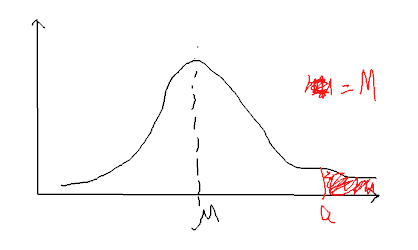
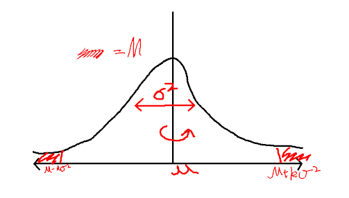
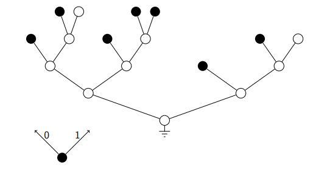
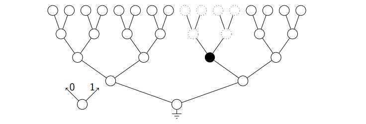
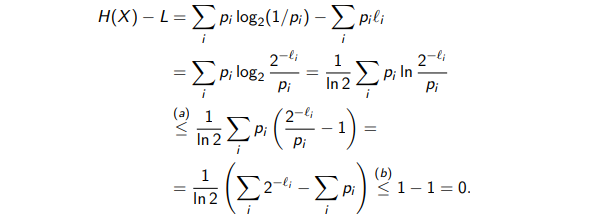

1.1 Random Variables
- A random variable (rv) X is a function that maps outcome of experiment to value in set X
- It is characterised by a probability mass function (pmf), PX(x) is the realisation of the rv X
- It has a cumulative distribution function (cdf), FX(a)=Pr(X≤a)=∑x≤aPX(x)
- Expected value is like the center of mass of the pmf, E(X)=∑aaPX(a)
- Variance is E[(X−EX)2], think of it as the expectation of the deviation from the mean
- E[(X−EX)2]=E[X2−2XE(X)+(EX)2]=E(X2)−2E(X)E(X)+(EX)2=E(X2)−(EX)2
- For any constant a, Var(aX)=a2Var(X)
- Often we take expectations of functions of rvs, e.g. E[g(x)]=∑ag(a)PX(a)
Characterised by joint pmf PXY(x,y),x∈X,y∈Y
Marginal distributions: PX can be computed through summation over Y:
PX(x)=y∑PXY(x,y)
Conditional distribution of Y given X, we divide the joint distribution by what we already know (the distribution of X):
PY∣X(y∣x)=PX(x)PXY(x,y)
Product rule is simply a rule derived from following the probability tree, think of it as generating a chain of probabilities:
PXYZ=PXPY∣XPZ∣XY=PYPX∣YPZ∣XY,etc
Sum rule is just a generalised form of marginalisation in multivariables:
PX(x)=y∑z∑PXYZ(x,y,z)
Independence is achieved within discrete random variables X1,X2,...,Xn if and only if:
PX1...Xn(x1,...,xn)=j=1∏nPXj(xj)
Recall that in product rule, we can write the equation above as a generating function:
PX1,...,Xn(x1,...,xn)=PX1(x1)PX2∣X1(x2∣x1)...PXn∣Xn−1...X1(xn∣xn−1...x1)
Thus X1,X2,...,Xn only when
PXi∣{Xj}j̸=i=PXi
1.3 Continuous Random Variables
- Characterised by the joint density function fXY(x,y)
- Pr(a≤X≤b,c≤Y≤d)=∫x=ab∫y=cdfXY(x,y)dxdy
- Conditional density, product and sum rules are analogous to discrete case, just replace the sum with integrals
Entropy can be thought as the minimum number of bits required to encode some events that follow a probability distribution. The entropy of a discrete random variable X with pmf P is:
H(X)=x∑P(x)logP(x)1
X is called a Bernoulli(p) random variable if takes value 1 with probability p and 0 with probability 1−p. Intuitively, it is most uncertain when p=0.5 and has zero entropy at p={0,1}. Its entropy's analytical equation is simply:
H2(p)=plogp1+(1−p)log1−p1
This is plotted below:
### 2.2 Properties of Entropy
Putting it to words, the entropy of a random variable is non negative and bounded by the entropy of a uniform distribution.
Let X be discrete random variable taking values in X. Denote the alphabet size ∣X∣ by M. Then:
- H(X)≥0
- H(X)≤logM
- Among all random variables taking values in X, the uniform distribution has the maximum entropy equal to logM
For any x∈X,0≤P(x)≤1, so P(x)1≥1, therefore logP(x)1≥1 Hence:
H(X)=x∑P(x)logP(x)1≥1
Need to use the property lnx≤(x−1), for x>0 with equality iff x=1
H(X)−logM=x∑P(x)logP(x)1−x∑P(x)logM
=ln21x∑P(x)lnMP(x)1≤ln21x∑P(x)(MP(x)1−1)
=ln21(x∑M1−x∑P(x))=0
We also know that for equality to happen MP(x)1=1 therefore P(x)=M1
2.3 Joint and Conditional Entropy
For the joint entropy of discrete rvs X and Y, think of the matrix of the probability mass function PXY, its entropy is just the sum of the elements times the minus log of the elements within this probability matrix:
H(X,Y)=x,y∑PXY(x,y)logPXY(x,y)1
The conditional entropy of Y given X is sort of counter intuitive written in its raw form:
H(Y∣X)=x,y∑PXY(x,y)logPY∣X(y∣x)1
Let us try to prove its relationship with the joint entropy to gain some intuiation:
H(Y∣X)=x,y∑PXY(x,y)logPXY(x,y)PX(x)
H(X)=x∑PX(x)logPX(x)1=x,y∑PXY(x,y)logPX(x)1
H(X)+H(Y∣X)=x,y∑PXY(x,y)(logPXY(x,y)PX(x)+logPX(x)1)=x,y∑PXY(x,y)logPXY(x,y)1=H(X,Y)
Hence, we arrive at a more intuitive result where uncertainty (entropy) of Y given X is equal to the joint uncertainty minus the uncertainty in X since it is "known".
H(Y∣X)=H(X,Y)−H(X)
Also the conditional entropy H(Y∣X) can also be written as the average uncertainty in Y given X using product rule:
H(Y∣X)=x∑PX(x)y∑PY∣X(y∣x)logPY∣X(y∣x)1=x∑PX(x)H(Y∣X=x)
The joint entropy of X1,X2,...,Xn is:
H(X1,X2,...,Xn)=x1,...,xn∑PX1,...Xn(x1,...xn)logPX1,...Xn(x1,...xn)1
Which can be written in a generative form, interpreted as total uncertainty is uncertainty in X1 plus uncertainty in X2 knowing X1, plus uncertainty in X3 knowing both X1 and X2 and so on:
H(X1,X2,...,Xn)=H(X1)+H(X2∣X2)+H(X3∣X1,X2)+...+H(Xn∣X1,...Xn−1)
Equation above can be written in a condensed format:
H(X1,X2,...,Xn)=i=1∑nH(Xi∣Xi−1,...,X1)
If X1,X2,...,Xn are all independent then the joint entropy is the sum of their individual entropy:
H(X1,X2,...,Xn)=i∑nH(Xi)
We often want to bound the probability of unlikely events, sometimes we do not know the distribution of the rv, but we can still get a bound for it using:
- Markov's inequality for non negative rvs which requires only mean
- Chebyshev's inequality which requires both mean and variance (for general rvs)
Mechanical Intuiation:
Let us imagine the probability mass function being some sort of shape, this is especially valid since we have only positive rvs:

So the center of mass is at μ. Let us denote a region of mass M contributed by axis [a,∞), we can also write M as:
M=P(X≥a)
We can write down with that μ≥Ma since at best we have M being a point mass that lies exactly μ, otherwise it will bring the center of mass up. Therefore we arrive at the Markov's inequality:
P(X≥a)≤aE[X]
Proof of Markov's Inequality:
We start with the definition of expectation and break it into two constituents:
E[X]=r≥0∑rP(X=r)=r<a∑rP(X=r)+r≥a∑rP(X=r)
Since for the part where r≥a, we can write ∑r≥arP(X=r)≥∑r≥aaP(X=r), therefore:
E[X]≥r<a∑rP(X=r)+r≥a∑aP(X=r)
E[X]≥ar≥a∑P(X=r)=aP(X≥a)
Often, we need to bound the tail probabilities of deviations around the mean of an rv, i.e. working out the margin of safety using:
P(∣X−E[X]∣≥a),for some a>0
Chevyshev's inequality is a way to bound the probability of deviations around the mean with knowledge of just the mean and variance σ2.
P(∣X−E[X]∣≥a)≤a2σ2
Mechanical Intuition:
In order to build some sort of intuition for it, we imagine our probability mass function being some sort of physical shape:

Looking at the picture above, we say that the variance σ2=E[(X−μ)2]=∫−∞∞dxf(x)(μ−x)2 is interpreted as the moment of inertia of our "shape" spinning about the center of rotation μ. If we denote M being the total mass contributed by the region (−∞,μ−kσ]∪[μ+kσ,∞) as shown, we have:
M=P(∣X−μ∣≥kσ)=P(∣X−E[X]∣≥kσ)
Now, we know when this shape is spinning, to calculate its moment of inertia, our region M will contribute at least M(kσ)2 by imagine them being point masses distance kσ away from the centre μ. Therefore we can write down:
σ2≥M(kσ)2
Hence
1≥Mk2=P(∣X−E[X]∣≥kσ)k2
We arrive at the alternative form of Chebyshev's inequality (origional form is obtained through substituting a=kσ):
P(∣X−E[X]∣≥kσ)≤k21
Formal Proof:
Note that P(∣X−μ∣≥a)=P(∣X−μ∣2≥a2)
Let Y=∣X−μ∣2, since Y is a non-negative rv, Markov's inequality can be applied:
P(Y≥a2)≤a2E[Y]→P(∣X−μ∣≥a)≤a2Var(X)
Very intuitive, as it basically states empirical average converges to mean.
Let X1,X2,... be a sequence of i.i.d (independent and identically distributed) rvs with finite mean μ. Let Sn=n1∑i=1nXi then informally:
n→∞limSn→μ
Formally:
n→∞limP(∣Sn−μ∣≥ϵ)=0
Proof:
Using Chebyshev's inequality we write:
P(∣Sn−μ∣≥ϵ)≤ϵ2Var(Sn)
Where Var(Sn)=n21Var(∑iXi)∗=n21∑iVar(Xi)=n2nσ2
Hence:
P(∣Sn−μ∣≥ϵ)≤n2σ2
Taking the limit to n→∞ we have P(∣Sn−μ∣≥ϵ)=0
*I was quiet sceptical about the line Var(∑iXi)=∑iVar(Xi), this intuitively does make sense for i.i.d rvs (total uncertainty equals to sum of individual uncertainty contributions) but lets still prove it, for two i.i.d rvs X and Y:
Var(X+Y)=E[(X+Y)2−(E[X+Y])2]=E[(X+Y)2−(E[X]+E[Y])2]
Var(X+Y)=E[X2+Y2+2XY−E[X]2−E[Y]2−2E[X]E[Y]]
Var(X+Y)=E[X2]+E[Y2]+2E[XY]−E[X]2−E[Y]2−2E[XY]
Var(X+Y)=Var(X)+Var(Y)
This property gives us more insight the meaning of entropy. We have the intuition that for whatever r.v, if we generate a long sequence of it, the probability of different sequences should be the same. i.e let the rv be english words, an article being the generated sequence of such rvs, the note I am typing now has basically the same existing probability as a wikipedia article on dolphins! (This example is not so true since each word is dependent on the previous, but it demonstrates the idea).
But what does this probability tends towards? A very small number, but how small? The property of AEP dictates exactly how small this probability is, if X1,X2,... are i.i.d rvs :
n→∞limn−1logPX(X1,X2,...Xn)=H(X)
Or in words: the log likelihood of a sequence tends towards its entropy for large sequences.
Proof (Badly explained here):
This is basically an extension of WLLN where Sn=n1∑iYi:
n→∞limP(∣Sn−E[Yi]∣≥ϵ)=0→P(∣Sn−E[Yi]∣<ϵ)=1
From the log of the generated sequence logPX(X1,X2,...Xn) we have:
logi=1∏nPX(Xi)=i=1∑nlogPX(Xi)
Let −∑i=1logPX(Xi)=∑i=1Yi and substitute into WWLN we get:
n→∞limP(∣n−1logPX(X1,X2,...Xn)−E[Y1]∣<ϵ)=1
Noting the expectation of Y1=logPX(X1) is H(X) therefore:
n→∞limP(∣∣∣∣n−1logPX(X1,X2,...Xn)−H(X)∣∣∣∣<ϵ)=1
L4. Prefix-Free Codes and Kraft Inequality
A code is prefix-free if no codeword is the prefix of another, i.e. {0,10,11} is a prefix code, {00,010,011,0101,1} is not since 010 is a prefix for 0101. In order to decode a prefix code, we would have to use letter spaces.
Graphically, the prefix condition on a tree has codewords on the leaves of the tree in the diagram below nodes that are coloured are the codewords:

- A full tree of depth lmax has 2lmax leaves at that depth level
- Whenever a codeword of lenthg l<lmax is created, all its descendants are removed from the tree

- Because a codeword must be a leaf which is at the termination of a node. Therefore each codeword of length l leads to a reduction of 2l−lmax leaves at the maximum depth lmax
- Hence the total number of unusable leaves at level lmax for a code with word length {l1,l2,...lN} is ∑i=1N2lmax−li
- We arrive at the Kraft inequality which is a necessary condition for any prefix-free code with lengths {l1,...lN}:
i=1∑N2lmax−li≤2lmax→i=1∑N2−li≤1
The expected codeword length L is simply L=∑x∈Xp(x)l(x) letting X be a random variable taking values in the alphabet X with entropy H(X). Then for any binary prefix-free code of X satisfies:
L≥H(X)
To prove this, we need to show that H(X)−L≤0:

where (a) is obtained using inequality ln(x)≤x−1 and (b) uses Kraft inequality.
For blocks of source symbols, if X is an iid source, denoting XN={X1,X2,...,XN} then:
H(XN)=NH(X)→NE[l(XN)]≥H(X)